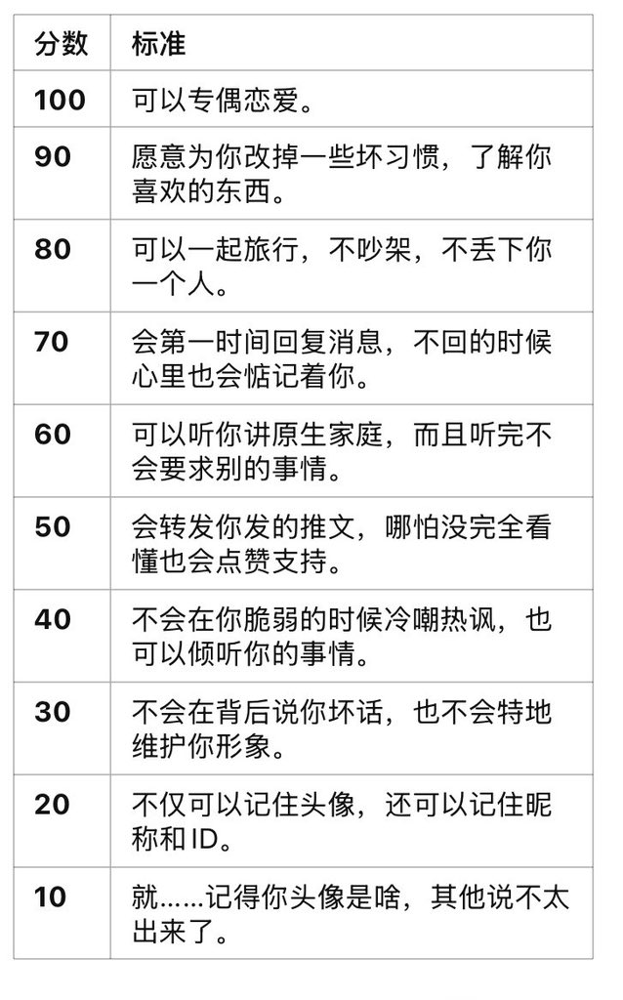

Luka Megurine 03
@LMegurine03
说实话回复几个人之后感觉转的有点后悔，因为有些项目确实实在不合适，如果你们觉得分数低了真的很抱歉，不是不重视你们的意思，下面我也会详细说明的……至于为什么我说不合适，主要是我感觉到了现在社交媒体动态亲密关系很有快餐化的趋势，很多情况下总是强调为对方牺牲什么才是重视对方

Luka Megurine 03
@LMegurine03
回复这条帖子给你打分，所有人都可以，但是这个要求其实有点太高了，跟现实中的社交媒体中的关系还有点不同，有的项目还有点不现实，所以可能不得不给的低一点，实在抱歉 https://t.co/i9xDtgArIq